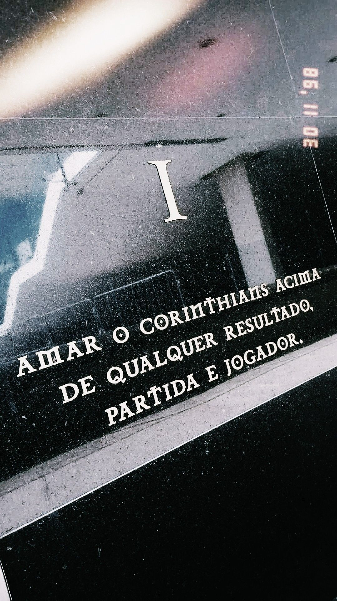

Sport Club Corinthians Paulista
Mais que um Time, uma Nação
O Corinthians é um dos clubes mais vitoriosos e tradicionais do futebol brasileiro. Desde sua fundação, em 1910, construiu uma história marcada por títulos, rivalidades intensas e uma torcida apaixonada. O time se consolidou como uma das maiores forças do futebol nacional, acumulando conquistas importantes como o Campeonato Paulista, o Campeonato Brasileiro, a Copa do Brasil, a Libertadores e o Mundial de Clubes da FIFA.
No cenário nacional, o Corinthians já conquistou sete títulos do Campeonato Brasileiro, com campanhas memoráveis como a de 2015, considerada uma das mais dominantes da era dos pontos corridos. No futebol paulista, é um dos maiores campeões da história, com dezenas de títulos estaduais que reforçam sua hegemonia regional. O clube também é conhecido pelo clássico contra o Palmeiras, o famoso "Dérbi Paulista", um dos confrontos mais intensos do futebol mundial.
No cenário internacional, o momento mais marcante da história do Corinthians foi a conquista da Copa Libertadores da América em 2012, de forma invicta. No mesmo ano, o clube venceu o Chelsea na final do Mundial de Clubes da FIFA, no Japão, consagrando-se campeão mundial. Essas conquistas elevaram o patamar do clube e fortaleceram ainda mais sua reputação como gigante do futebol. O Corinthians é, sem dúvida, um dos pilares do futebol brasileiro. Mais que um time, o Corinthians é uma paixão e identidade para milhões de torcedores. Ser corinthiano é mais do que torcer: é viver uma paixão intensa, é resistir, é acreditar até o último minuto. É carregar no peito um amor que não se explica, apenas se sente. Vai, Corinthians!